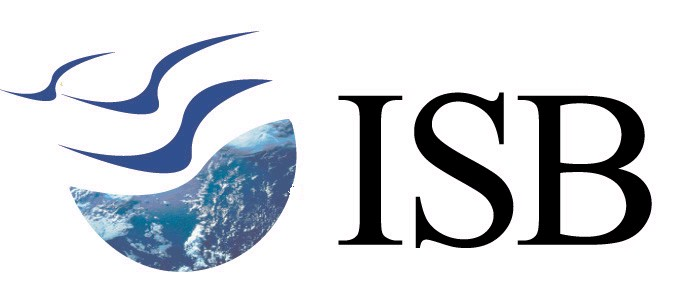
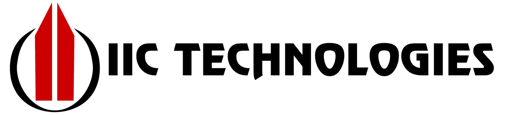
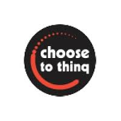
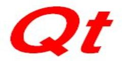

-
Working on to find the effect on other stores in a mall if a popular store removed.

-
Working on Defence project which helps to understand the data of temperature and rainful of India.
I am currently working on this.

Research Intern at IIIT-Hyderabad | Summer-2016
-
Worked on research problem "Ear Decomposition" under the guidance of Prof. Kishore Kothapalli and Dr. RamaKrishna.
-
The Work has been done to break the time complexity of an existing algorithm of Ear Decomposition(an algorithm to find the Bi-connectivity of a graph.) and we concluded with 2X Speed Up.
-
Publication: - Cologne Twente Workshop 2017, Cologne, Germany.
Software Engineering Intern at ChooseToThinq, Pune | Summer-2015
- A software for assessment and quizzing purpose developed by me
- Currently this project is used by some startups for recruitment.
- Technologies used are Web2Py, HTML, CSS, Python and Bootstrap
- Internship Certificate: Click Here

Python Developer at Crowd steering, Nashik | Summer-2015
- MIT media lab funded project, in which we show the mobility of crowd, their movement in the Nashik map
and where the density is high, Nashik government have used this project in Kumbh Mela. Being an intern, I
have learnt how to implement a solution for the real-time problem as a good team worker.
- Technologies used are Python, Pandas, Plotly, Amazon EC2
Software Developer Intern at FinsolTech, Hyderabad | Winter-2016
- A software is developed for stock market, this act as a middle layer to communicate between FIX(Financial information exchange) protocol used by Finsol to CTP(Collection Tree Protocol), used by Shanghai stock market, it was successfully integrated with the main project and during this process, I have learned a lot about protocols and socket programming.
- The complete project was implemented in C++ language.
